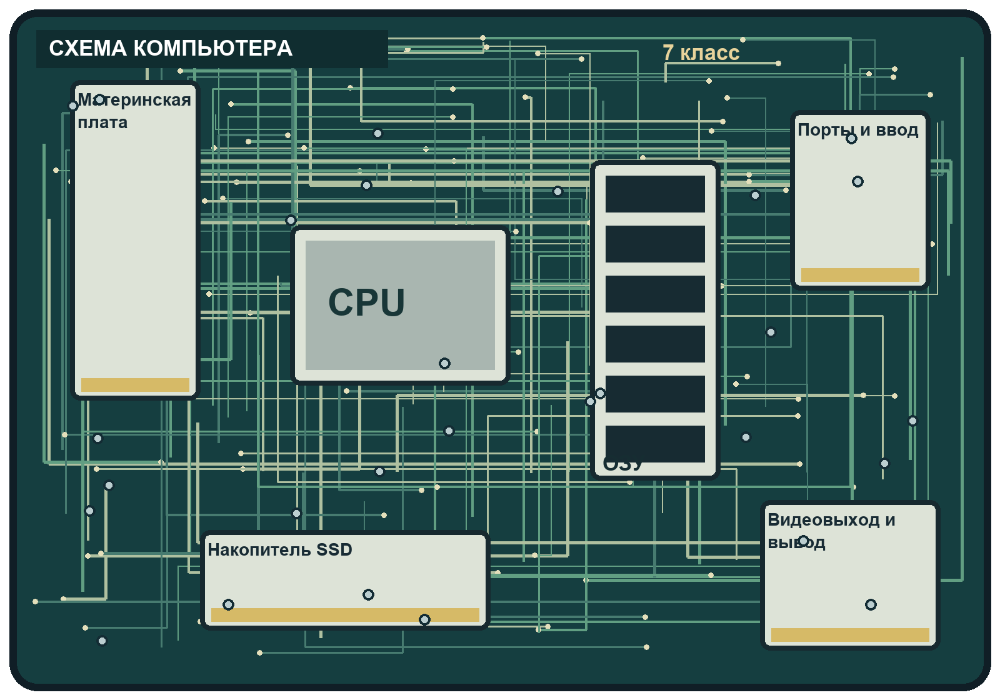
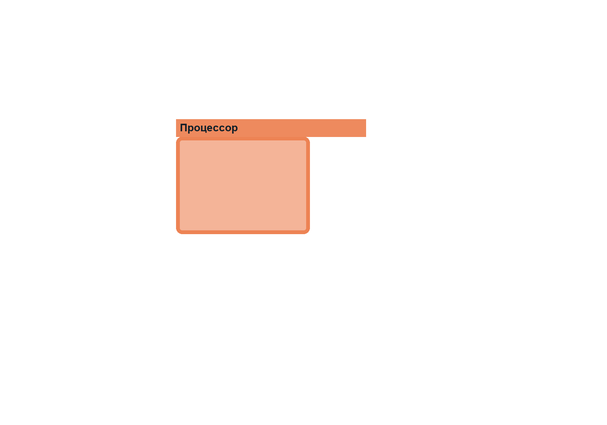
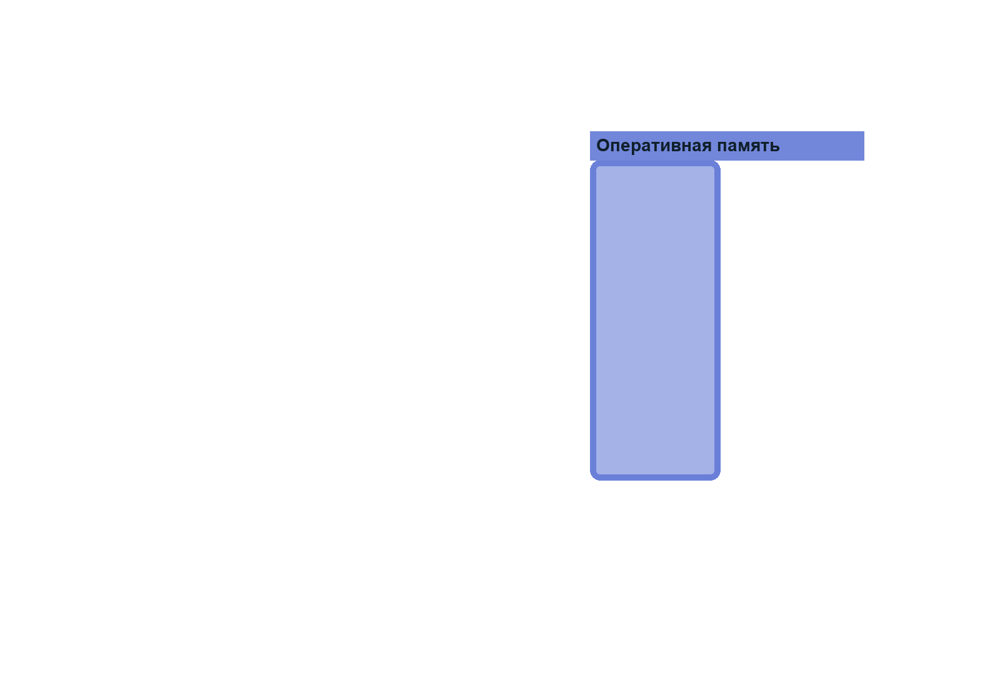
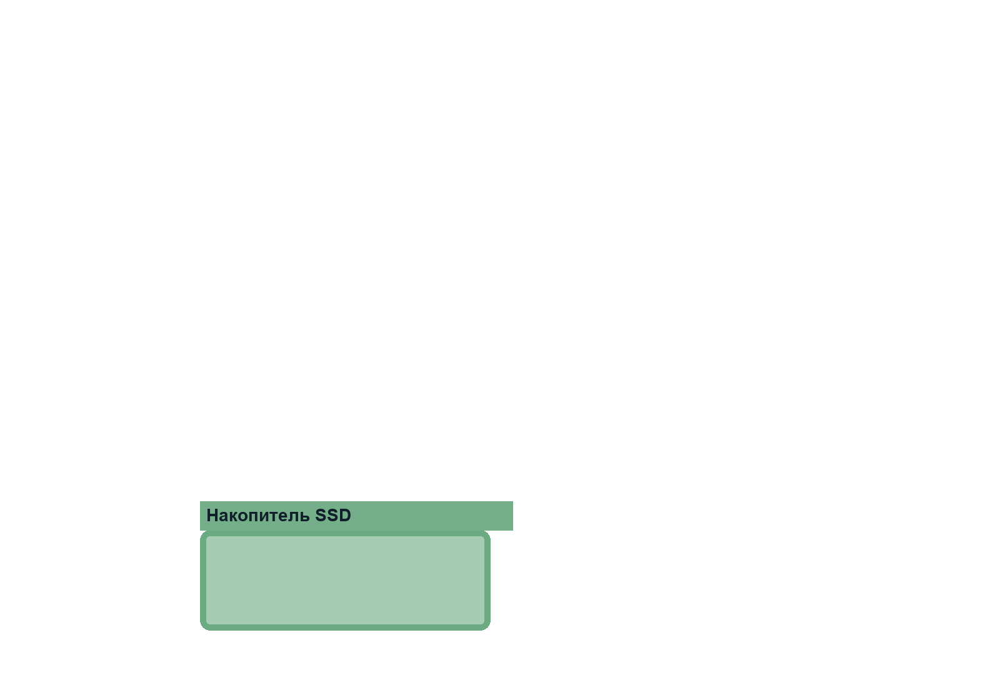
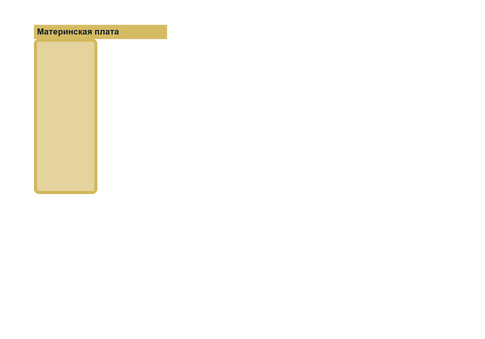
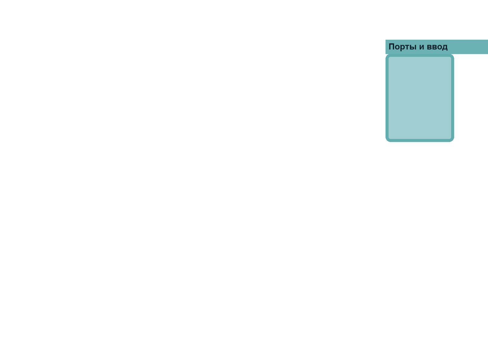
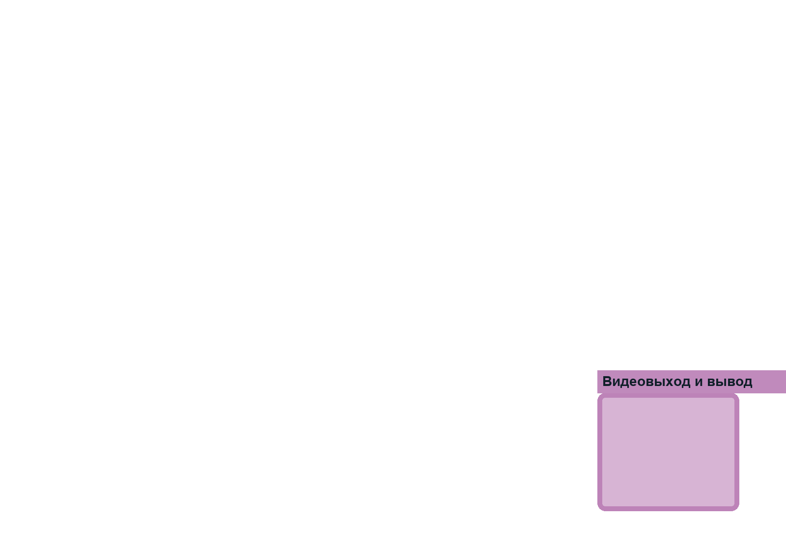

Лабораторная работа 3 · Вариант 2
Плата с пояснениями
Шесть виртуальных областей объясняют компоненты. Здесь показан макет совмещения слоя с маркером.
Это интерактивное превью. Камера и распознавание маркера на этой странице не реализованы. Проект опубликован в Web-AR.Studio по ссылке выше. Запись реального распознавания на смартфоне выполняется отдельно.







Виртуальные области
Выделения полупрозрачны: 60%. Положение каждого объекта задано относительно полного маркера.

Педагогическая задача
Ученик сопоставляет физическое расположение компонентов с их функциями, сравнивает ОЗУ и SSD, объясняет связь процессора с памятью. Модель не требует разборки работающего компьютера.
Для переноса в AR Studio
- Создать проект с распознаванием фотографии и загрузить ar_marker.png как маркер.
- Загрузить шесть файлов ar_*.png как отдельные изображения. Каждое занимает всю площадь маркера, центр совпадает с центром маркера.
- Оставить видимость каждого изображения 100%: прозрачность 60% уже записана в альфа-канале области. Повторно снижать непрозрачность до 60% не нужно.
- Проверить привязку к маркеру, опубликовать проект, открыть на смартфоне и записать реальное распознавание.